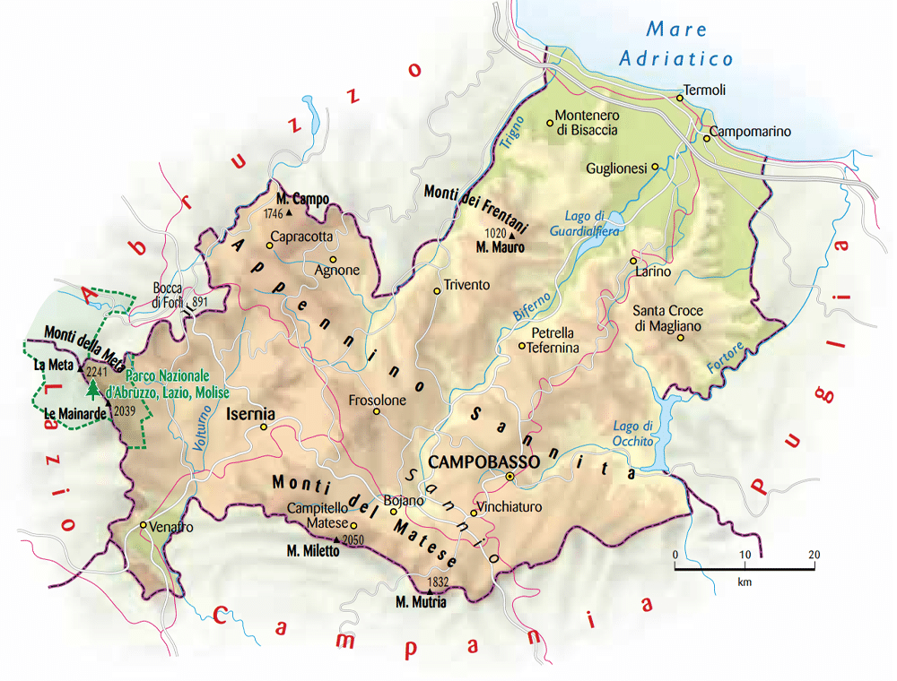
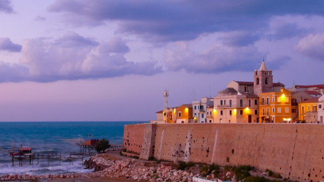

| Nome |
Molise |
| Capoluogo |
Campobasso (CB) |
| Data di Istituzione |
Dicembre 1963 (1970 con prov.Isernia) |
| Altitudine media |
631 m.s.l.m |
| Superficie |
4461 km^2 |
| Abitanti (agosto 2023) |
288.816 |
| Densità |
65 ab/km^2 |
| Comuni |
136 + 8 |
| Province |
Isernia (IS) |
| Confini |
Abruzzo, Campania, Lazio, Puglia, Mar Adriatico |
| Patrono |
Maria Santissima Addolorata di Castelpetroso |
| PIL procapite (2017) |
19.800€ |
Posto da visitare assolutamente: Termoli Vecchia - Termoli (CB)
Termoli Vecchia è la parte antica della città di Termoli,
situata sulla costa adriatica della regione Molise, in Italia.
Questa area è caratterizzata da un suggestivo borgo medievale situato
su una penisola che si estende nel mare, con un castello e
antiche stradine lastricate. E
cco alcuni dettagli su Termoli Vecchia:
Castello Svevo:
Il Castello Svevo è uno dei principali punti di riferimento di Termoli Vecchia.
Costruito nel XIII secolo da Federico II di Svevia, il castello domina la parte
più alta della penisola. Oltre alla sua importanza storica, offre una
vista panoramica sulla città e sul mare.
Stradine e architettura medievale:
Le strette stradine lastricate e le case di pietra caratterizzano il centro
storico di Termoli Vecchia. Questo borgo medievale conserva un fascino autentico e
offre l'opportunità di passeggiare tra antiche architetture e atmosfere suggestive.
Cattedrale di Termoli:
La Cattedrale di Termoli, o Cattedrale di San Basso, è un'altra attrazione significativa
nella zona. La cattedrale è costruita in stile romanico-pugliese e
conserva al suo interno un sarcofago paleocristiano risalente al IV secolo,
noto come "Sarcofago di San Timoteo."
Centro storico affacciato sul mare:
Termoli Vecchia si affaccia direttamente sul mare Adriatico.
Lungo le mura della città e le stradine, è possibile godere di viste
panoramiche sul mare e sui dintorni.
Villaggio dei Pescatori:
Nelle vicinanze di Termoli Vecchia si trova il caratteristico "Villaggio dei Pescatori,"
dove le case dei pescatori si affacciano direttamente sul mare.
Questa zona mantiene un'atmosfera autentica e pittoresca.
Atmosfera tradizionale:
Termoli Vecchia è un luogo che conserva l'atmosfera autentica di un antico borgo marinaro.
I visitatori possono immergersi nella storia e nella cultura della zona,
gustando cibo tradizionale nei ristoranti locali e godendo di una tranquilla
passeggiata tra i vicoli.
Eventi culturali:
Termoli Vecchia è spesso teatro di eventi culturali, feste tradizionali e
manifestazioni che celebrano la storia e le tradizioni della città.
In sintesi, Termoli Vecchia è un luogo ricco di storia e fascino,
con il suo castello storico, le stradine medievali e la vista panoramica sul mare.
È una tappa consigliata per coloro che desiderano esplorare la storia e la
bellezza della città di Termoli.
